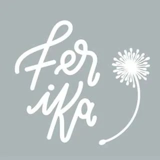
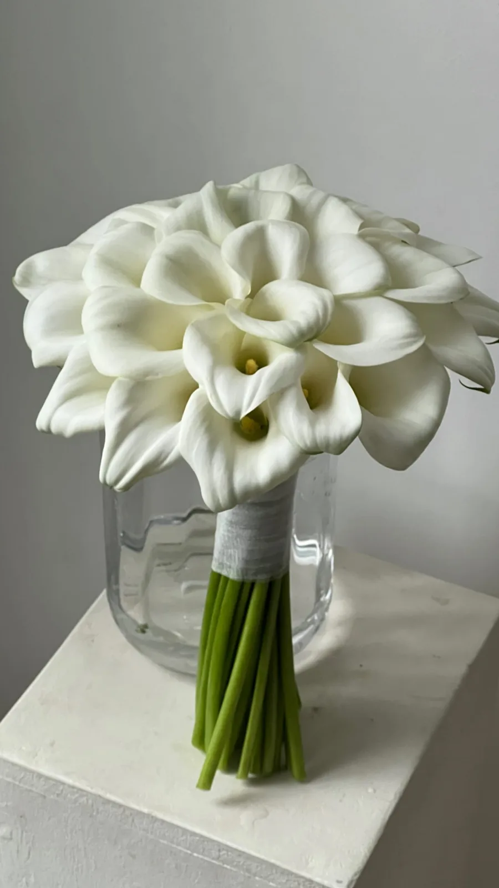
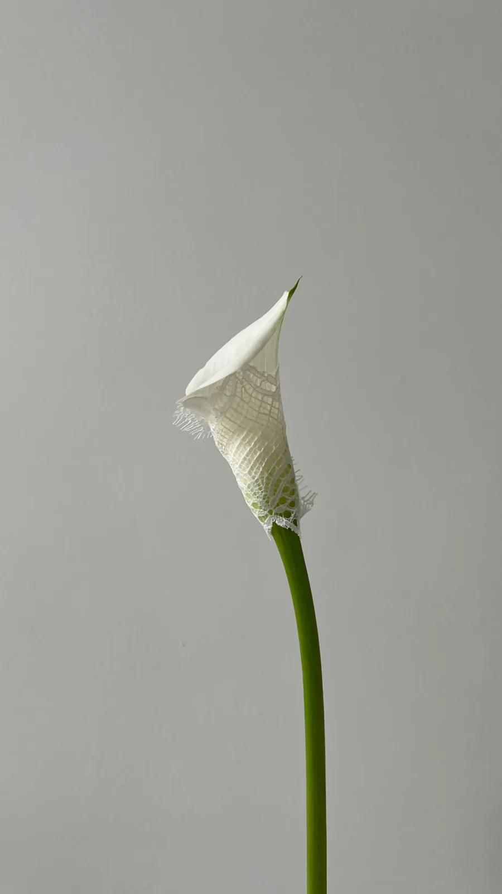
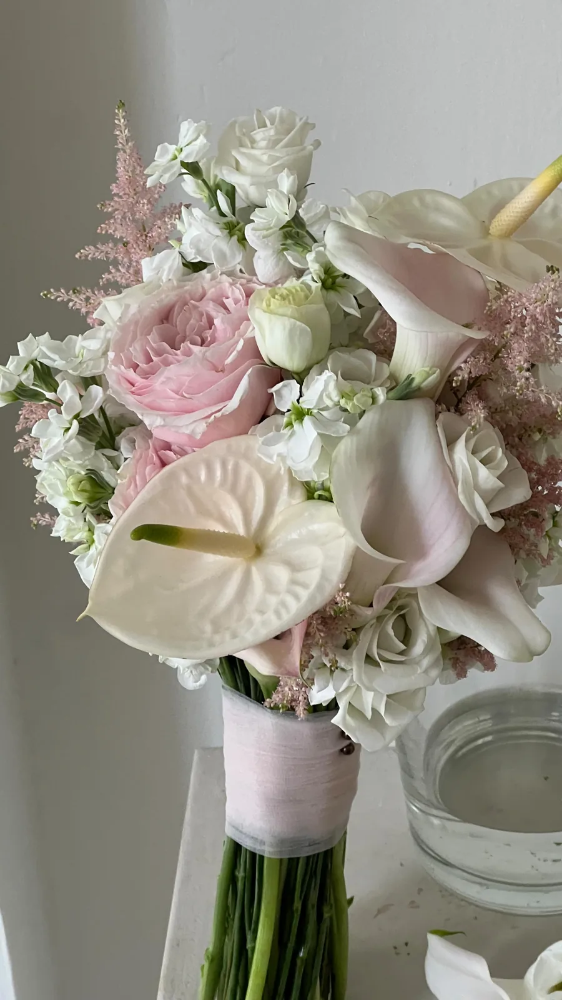
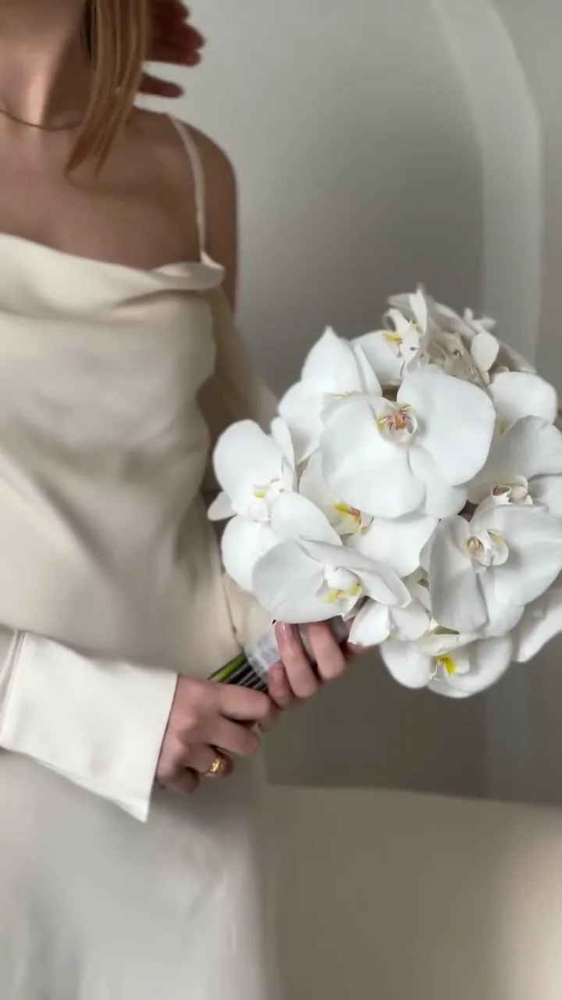
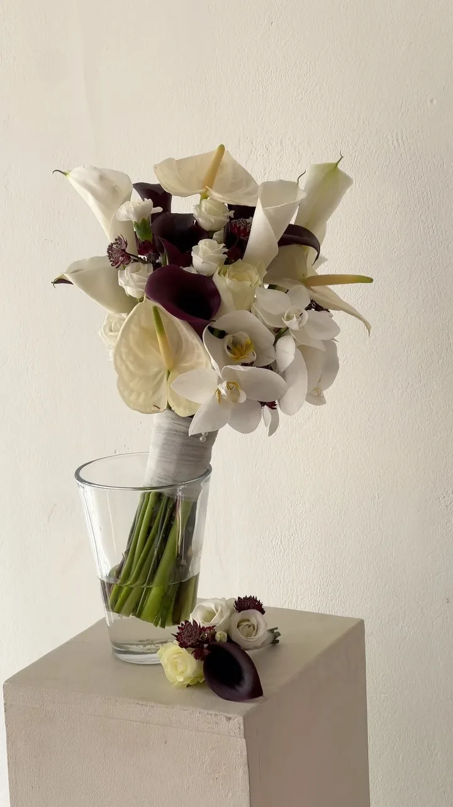
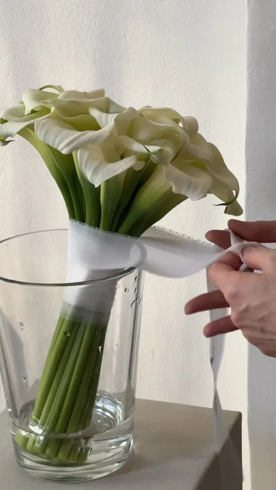
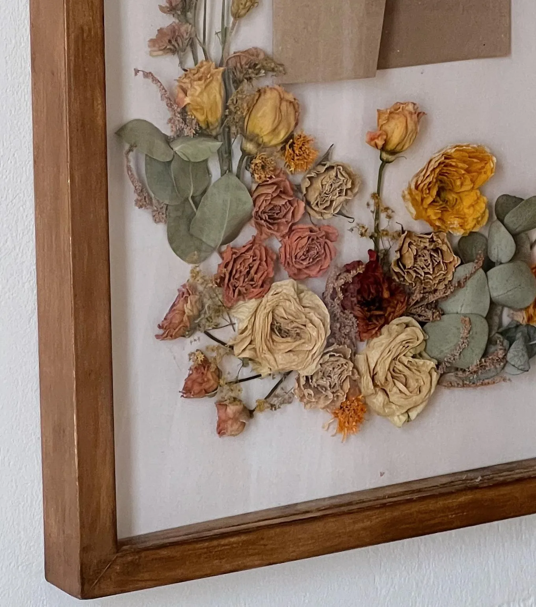
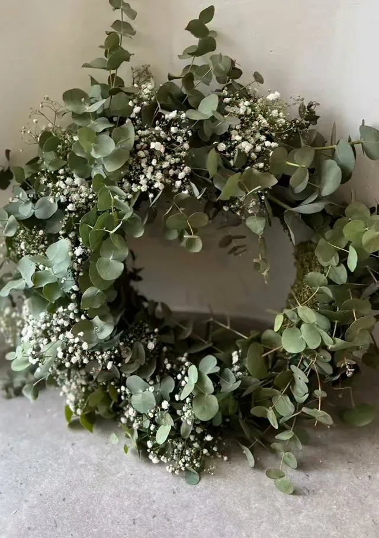
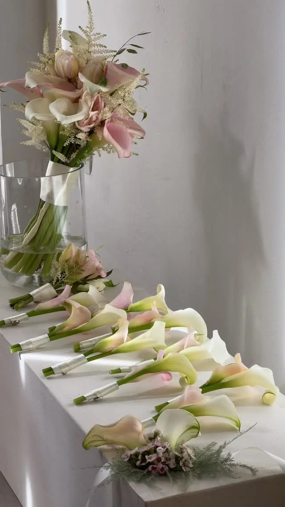

Floral Ferika Stuur een berichtBloemen voor je mooiste dag en alle dagen erna
In ons atelier in Hoboken maken we bruidsboeketten met calla's, orchideeën en garden roses, in veel crème en wit. En is de grote dag voorbij, dan kaderen we je boeket in. Zo hangt het gewoon aan je muur.

op Google

Rustig, wit en met aandacht gemaakt
Elk boeket maken we met de hand, in ons atelier aan de Sint-Bernardsesteenweg in Hoboken.
We kiezen de bloemen met zorg, zoals de garden roses van Alexandra Farms, en werken met lint op maat van Elzem Atelier. Langskomen kan op afspraak. Stuur gewoon een berichtje en we plannen een moment.
Fotograaf of creator? Onze styled studio voor fotoshoots vind je op Instagram als Atelier Ferika.
Bekijk Atelier FerikaEen boeket dat bij jou past
Strak en modern of zacht en romantisch. We stemmen het boeket af op je jurk, je kleuren en de sfeer van je dag.





Je bruidsboeket, voor altijd bewaard
Een droogboeket in een kast is zonde. Wij kaderen het in, met waar je wil ook je trouwkaart of corsage erbij. Zo krijg je een persoonlijk en artistiek stuk voor aan de muur.
- 01Stuur een fotoTwijfel je of je boeket nog mooi genoeg is? Stuur een DM met een foto, dan bekijken we samen wat kan.
- 02Opsturen of binnenbrengenJe stuurt het boeket op of brengt het langs in ons atelier in Hoboken, op afspraak.
- 03Samen afstemmenJe kiest uit verschillende kaders en we stemmen alles af op jouw stijl.
Ook oudere boeketten zijn welkom. We kaderden er al eentje in dat 14 jaar bij iemand thuis had gelegen.
De kerstkransen zijn terug
Voor thuis of voor je zaak. We stellen je krans samen volgens jouw smaak en budget, met eucalyptus, gipskruid en wat je zelf graag ziet.

Vertel ons over je dag
Stuur ons een bericht op Instagram met je datum, je kleuren en een paar foto's die je mooi vindt. Dan denken we met je mee en plannen we een moment in het atelier.
